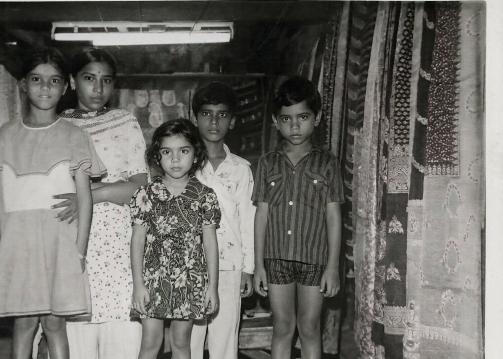
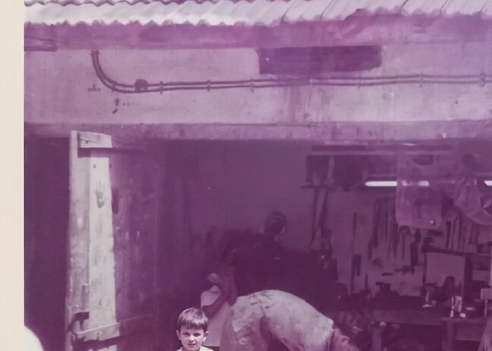
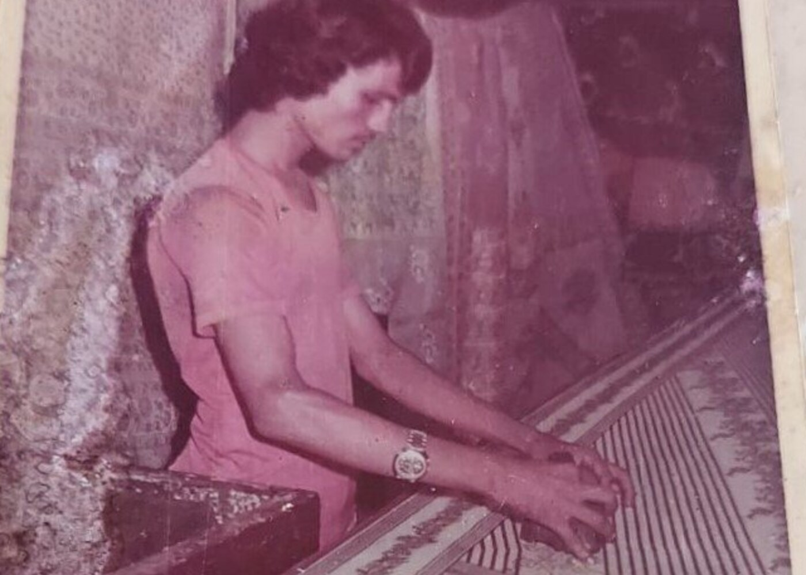
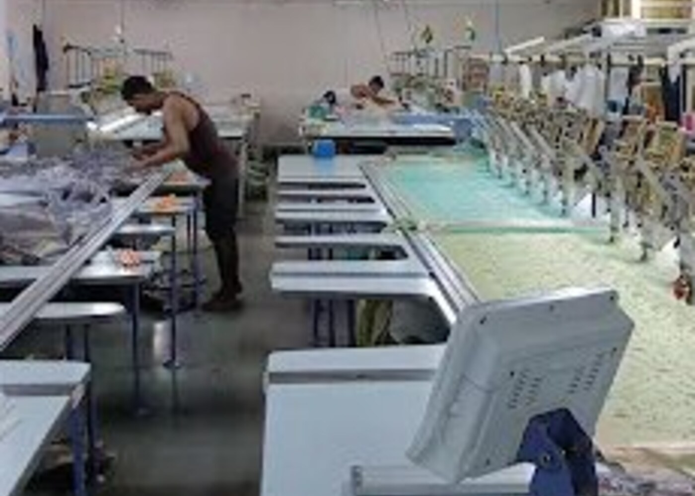
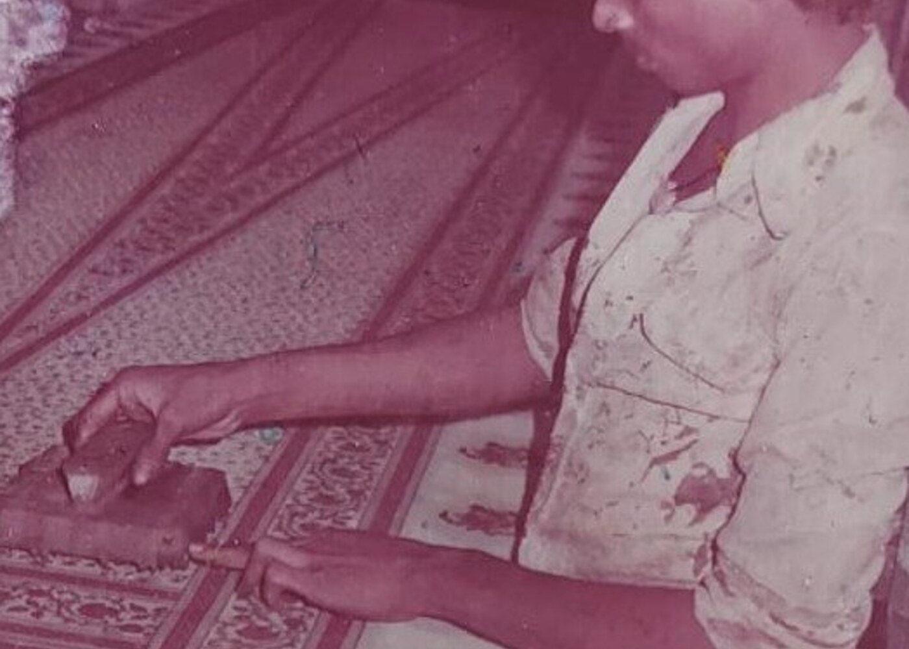

01 / Origin
From a small beginning.
The opening establishes heritage, scale and atmosphere before the story starts moving.

02 / Archive
The workshop becomes the story.
Archival imagery enters as a physical object, not a static gallery tile.

03 / Craft
Pattern. Colour. Repeat.
The composition moves from historical craft into present-day textile language.

04 / Capability
Printing is only where it starts.
Processes appear progressively as the user scrolls through the scene.

05 / Factory flow
Grey fabric in. Packed order out.
Factory imagery becomes the environment around the manufacturing narrative.

06 / Trade
Made for the trade.
The story resolves into product, capability and a wholesale conversation.